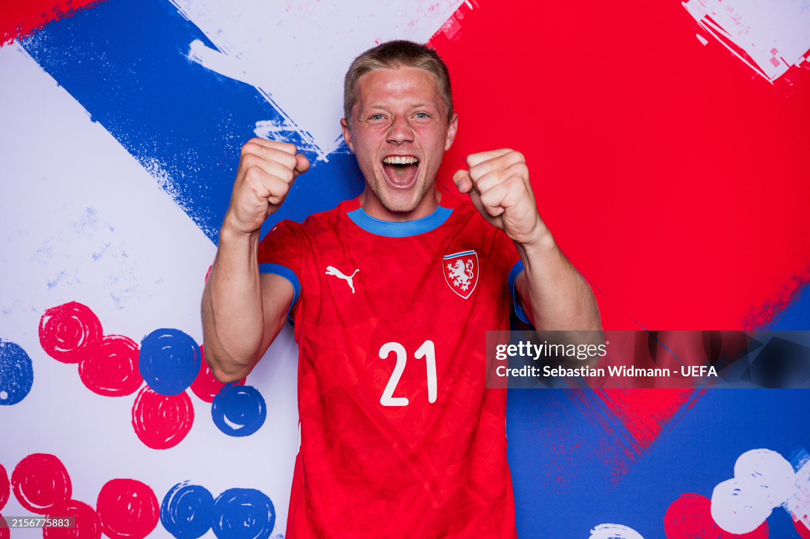
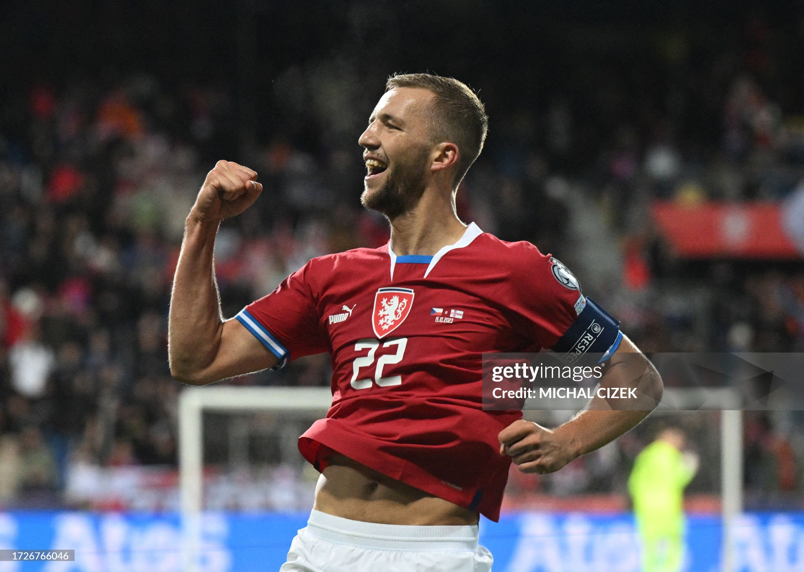

| Nombre | Posición | Edad | Bibliografía | Portada |
|---|---|---|---|---|
| David Zima | Defensa central | 24 |
David Zima, nacido en 2001, es un sólido defensor central checo. Se caracteriza por su fuerza física y buen juego aéreo. Actualmente juega en el Torino de Italia y es parte del proyecto a futuro de la selección checa. |
 |
| Tomas Chory | Delantero | 30 |
Tomas Chory es un delantero nacido en 1995. Destaca por su altura y presencia en el área rival. Juega en el Viktoria Plzen, donde es uno de los referentes ofensivos. |
|
| Ondrej Lingr | Mediocampista ofensivo | 26 |
Ondrej Lingr, nacido en 1998, es un mediocampista ofensivo con capacidad goleadora. Actualmente juega en el Feyenoord de Países Bajos. |
|
| Vaclav Cerny | Extremo derecho | 28 |
Vaclav Cerny, nacido en 1997, es un extremo rápido y habilidoso. Juega en el VfL Wolfsburgo de la Bundesliga. |
|
| Ladislav Krejci | Mediocampista | 26 |
Ladislav Krejci, nacido en 1998, es un mediocampista con gran capacidad física y liderazgo. Actualmente es capitán del Sparta Praga. |
|
| Lukas Provod | Mediocampista | 28 |
Lukas Provod, nacido en 1997, es un mediocampista con buena llegada y disparo de media distancia. Juega en el Slavia Praga y es habitual en la selección checa. |
|
| Jan Kliment | Delantero | 32 |
Jan Kliment, nacido en 1993, es un delantero experimentado con olfato goleador. Ha jugado en varias ligas europeas y actualmente está en el Viktoria Plzen. |
 |
| Dominik Cerv | Mediocampista | 30 |
Dominik Cerv, nacido en 1995, es un mediocampista de contención con gran capacidad de recuperación. Actualmente juega en el Slavia Praga. |
 |
| Vladimir Coufal | Lateral derecho | 33 |
Vladimir Coufal, nacido en 1992, es un lateral derecho de gran despliegue físico. Juega en el West Ham United de la Premier League. |
 |
| Adam Hlozek | Delantero | 23 |
Adam Hlozek, nacido en 2002, es uno de los talentos jóvenes más importantes de la República Checa. Juega en el Bayer Leverkusen de Alemania. |
|
| Patrik Schick | Delantero | 29 |
Patrik Schick, nacido en 1996, es el goleador histórico reciente de la selección checa. Juega en el Bayer Leverkusen y fue máximo artillero de la Eurocopa 2020. |
|
| Tomas Soucek | Mediocampista defensivo | 30 |
Tomas Soucek, nacido en 1995, es mediocampista y capitán del West Ham United. Es pieza fundamental de la selección checa por su liderazgo y capacidad de llegar al área rival. |
 |